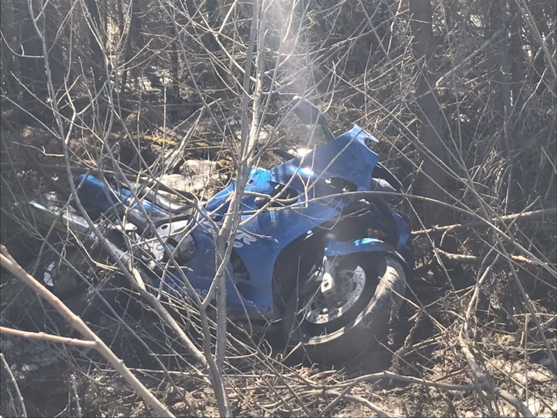
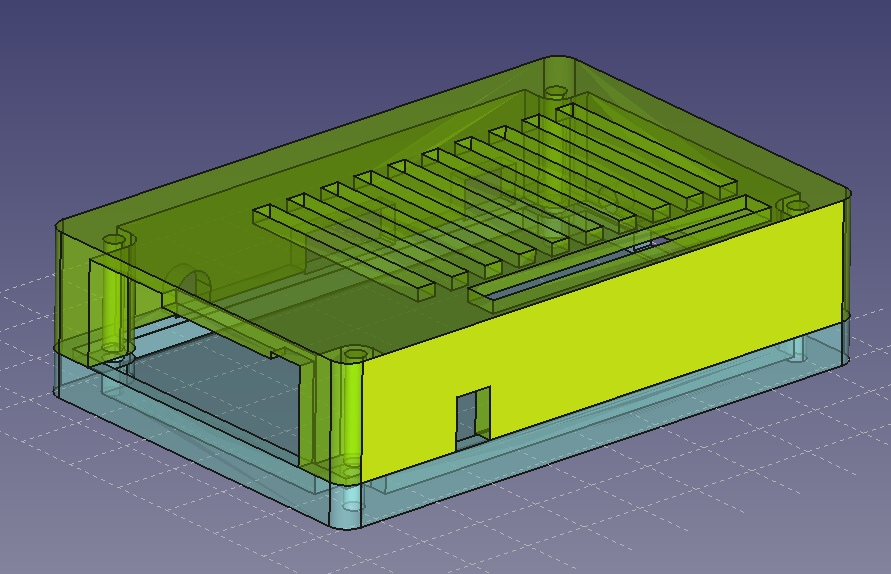
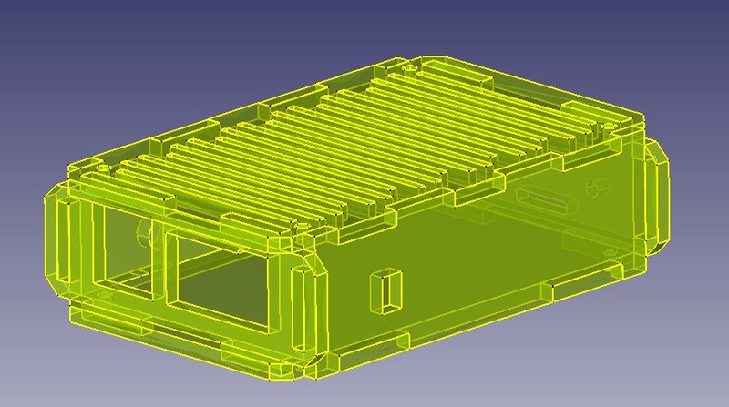
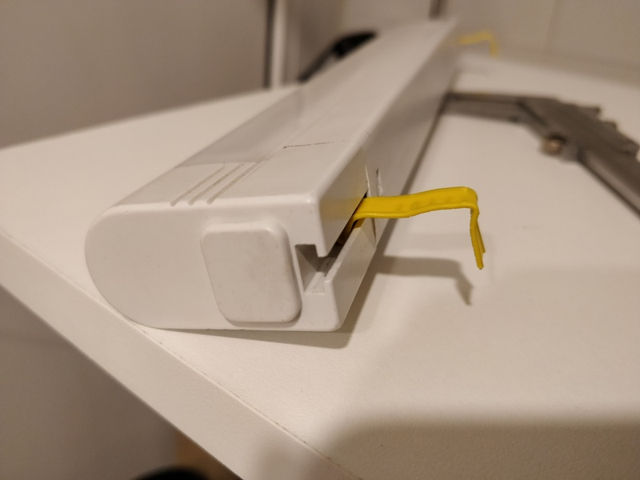
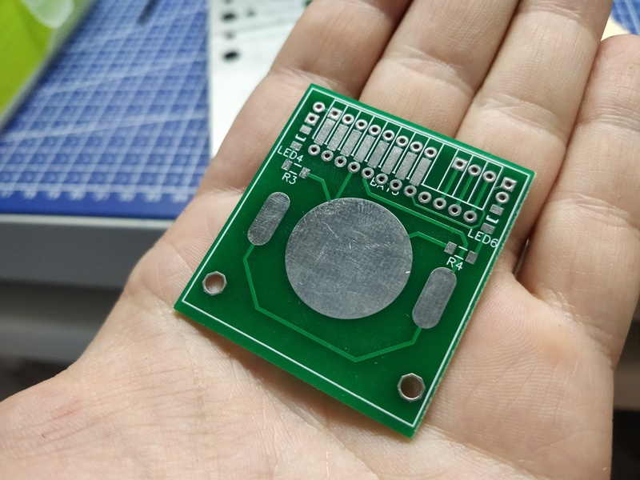

Установка Ansistrano на Debian и решение проблем

Не так давно появилась необходимость реализовать CI/CD. Подумав, решил разбить это на две части - сборку и деплой контейнеров и отдельно - на деплой кода. Вторую часть решил реализовать с помощью ansistrano - это аналог capistrano, только выполненный в виде модуля для ansible. Почему не стал делать статические контейнеры с кодом? Хотя бы потому, что в случае использования ansistrano, роллбек проходит практически мгновенно, а это большой плюс. Когда-то я уже поднимал ansistrano, но на этот раз всё оказалось несколько сложнее.
О традиционных свадьбах

В последние лет 10 довольно часто замечаю, что многие пары разводятся спустя год после свадьбы. Зачастую разводятся нехорошо, со скандалами и прочими спецэффектами. Недавно обсуждали в контакте эту ситуацию с одной знакомой. Ниже приведу то, что собрал в кучку из своих мыслей и реплик.
Самая дебильная стратегия - два молодых организма знакомятся, общаются (со временем всё теснее), не предохраняются, через месяц срочно женятся, при этом на свадьбу берут огромные кредиты, то ли от большого ума, то ли под давлением мамашек - "шобы как у всех было и не хуже, чем у Лариски с третьего подъезда!".
Теги: мысли-вслух, жизненное, идиоты
Про умные часы

Помню, несколько лет назад перед установкой натяжного потолка ко мне пришёл замерщик. Произвёл все необходимые замеры, занёс данные в бумаги и собрался было уже уходить, но заметил на моём запястье умные часы, в результате чего между нами произошёл забавный диалог:
- Это что, умные часы?
- Ну да, а что?
- Но Apple ведь их ещё не выпустила!
- Компания Sony не спрашивала их разрешения и это уже третьи умные часы, которые они выпускают.
- А что они умеют?
И далее мне уже пришлось вкратце описывать функционал, чем из этого функционала пользуюсь лично я, сколько они живут от одной зарядки (прямо по аналогии с вопросами о мотоцикле в стиле "Сколько жрёт? Сколько прёт?") и тому подобное. Для меня всегда была удивительна позиция людей, которые живут в некоем вакууме вендорлока одной компании (будь то Apple, Samsung или, например, Sony) и мало того, что не видят ничего вокруг, так ещё и считают (этим больше всего грешат адепты Apple почему-то), что весь мир крутится именно вокруг этой компании, именно она делает всё лучше остальных и именно ей принадлежит изобретение чего-то, чем они пользуются.
Теги: smartwatch, gadgets
Про смерть, мотоциклы и "гиен"

Ну вот, опять началось. Как только погибает мотоциклист, раз за разом происходит одно и то же: откуда-то появляется множество (десятки) людей, пишущих "хруст", "оттаяли смертнички", "одноразовый", "сам виноват", "туда ему и дорога" и так далее. Эти люди подобны гиенам, они ходят вокруг погибшего, ржут, троллят, смеются. Причём их ценное оригинальное мнение о подобных ситуациях, которое обязательно все должны узнать, выражается ими ДО того, как стали известны какие-либо детали происшествия, ДО того, как получено официальное заключение ГИБДД, ДО того, как появились в открытом доступе записи с видеорегистраторов и вообще стало известно, кто виноват в сложившейся ситуации. А под аналогичными постами о ДТП с участием авто большинство пишет "соболезнуем", "кошмар" и так далее.
Вот пост в ЧП ДТП Пермь, а вот пост о том же ДТП в Мотобратство Пермь. Совершенно разные комментарии.
Отец с сыном ехали на двух мотоциклах из Ижевска к нам на трек, отец 57-ми лет, насколько мне известно, не справился с управлением и влетел в ограждение. Насмерть. Сын жив, цел.
Теги: moto
Для чего нужен 3d принтер (часть 2)

В продолжение одного из предыдущих постов, хочу продолжить тему о корпусах и в продолжение другого - о 3d печати. Как я уже говорил, корпуса для Orange PI PC стоят от 300 до 700 с лишним рублей. О том, сколько можно сэкономить, используя 3d печать, будет под катом.
Теги: 3d-printing, pi
Корпус для Orange PI PC из акрила

В хозяйстве трудятся несколько одноплатных компьютеров - два Raspberry PI - один старый в качестве принт сервера и онлайн радио в одной комнате, другой посвежее - вместо TV приставки и в качестве эмулятора ретроконсолей, OrangePi Zero - является мозгами умного дома и на нём запущен Majordomo. Orange Pi PC - выполняет обязанности компьютера на рабочем месте и используется для прошивки микроконтроллеров, для тестов и для отображения распиновки и даташитов и документации в процессе пайки. Второй Orange Pi PC с установленным на нём OctoPrint нужен для возможности печатать на 3D принтере с разных компьютеров через Wi-Fi. Для Raspberry PI можно найти огромное множество различных корпусов, притом дёшево. Для Orange PI долгое время ситуация была и остаётся плачевной.
Для чего нужен 3d принтер (часть первая)

В закромах оф родина у меня давно пылился старый линейный светильник. Вероятно я бы применил его где-нибудь и раньше, если бы не одно но - штатные крепления от него были безвозвратно утеряны ещё лет *дцать тому назад. Светильник периодически использовался в качестве временного источника освещения и для того, чтобы была хоть какая-то возможность его закрепить, я сделал крепления из зажимов от пакетов с хлебом. Лютый колхоз, я согласен, но эти желтые штуки уже не раз выручали меня при необходимости прикепить что-то к чему-то, в то время когда другие способы были исчерпаны. Вот и в этом случае подобная магия помогла прикрепить светильник к полке над 3d принтером в шкафу. Проблема была в низкой надёжности таких креплений - светильник периодически падал со своего насиженного места, стоило мне лишь сегка его задеть.
В очередной раз, когда он сбросился вниз, осознав тщетность своего бытия, мне надоело бороться с хлебной закруткой и герр Штангенциркуль нам помог в очередной раз. Проектирование - 5 минут, печать - около 25 минут. Фотографии процесса и результата - под катом.
Теги: 3d-printing
Простое приспособление для разделения печатных плат

Как я уже писал в прошлом посте, я зимой получил горсть печатных плат. Есть такой сервис, как JLCPCB, который дёшево производит печатные платы хорошего качества. Есть только одно но - минимальный заказ 10 штук и платы должны быть не больше, чем 10*10 сантиметров. Но дело в том, что на площади в 10*10 сантиметров порою можно разместить множество небольших плат для различных устройств. Есть различные способы разделения плат. Можно заказать пропил между платами, можно прокатку (между платами делается ложбинка, по которой их можно разломить), но когда у тебя на руках уже есть две платы на одном куске текстолита, которые нужно разделить, на помощь приходит старый дедовский способ - стальная линейка и канцелярский нож.
У данного способа есть очевидные недостатки. Во-первых, стальная линейка достаточно тонкая, а во-вторых - достаточно гладкая. Поэтому в процессе реза её можно случайно сдвинуть или нож может уйти в сторону, потому что каждый раз, когда я пытался прорезать в плате углубление, я боялся, что при достаточно сильном давлении в сторону руки, которая держит линейку, нож сорвётся и выскочит на линейку. Одним словом, есть опасность повредить руку. И, кажется, я нашёл метод, с помощью которого можно усовершенствовать данный способ, используя гуано и веточки легкодоступные и дешёвые ресурсы.
Про весеннее обострение
Этой весной столько всего приключилось и накопилось, что на ведение блога просто не хватало сил и времени. Постараюсь исправить это упущение и вывалю всё скопом. Скажу сразу, под обострением я в данном случае имею в виду обострение моего желания изменений, стремления к чему-то новому и избавление от чего-то старого.
Теги: жизненное, 3d-printing, moto, keyboards, smarthome
Про векторную графику и консерватизм
Давным-давно, в 97-м или 98-м году я окончил курсы по Corel Draw, тогда ещё седьмой версии. Я тогда не думал о том, где и зачем мне это может понадобиться, мне тогда просто нравилась сама концепция векторной графики. Что удивительно, знания эти мне пригодились и не раз.
Теги: instruments, graphics